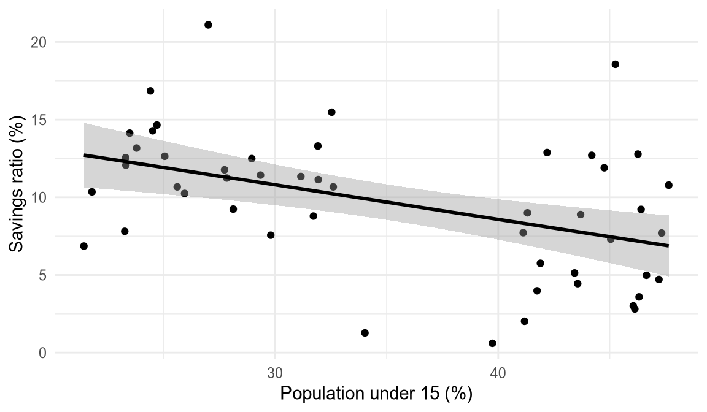

library(ggplot2)
library(modelsummary)
# Income in thousands, so its coefficient is readable
savings <- LifeCycleSavings
savings$dpi_k <- savings$dpi / 10002 Writing with Quarto
This chapter is a worked example. Open guide.qmd next to the PDF to see how each element is written, copy what you need into your own chapters, then delete this one and remove it from chapters: in _quarto.yml. Writing text and code in one document goes back to what Knuth (1984) called literate programming: the analysis and its description can no longer drift apart.
The example asks an old question in empirical economics: do countries with more dependants save less? Under the life-cycle hypothesis (Modigliani 1966), people save during their working years and run their savings down in retirement, so countries with more young and old dependants should save a smaller share of their income. The data are R’s built-in LifeCycleSavings set, 50 countries averaged over 1960 to 1970, which Belsley et al. (1980) took from a bachelor’s thesis written at MIT.1
Load the packages and prepare the data once, at the top of the chapter:
2.1 Citations
References live in references.bib, a plain-text BibTeX file that a reference manager such as Zotero (with the Better BibTeX add-on) can keep up to date for you. Every entry has a key, and you cite it by writing the key after an @:
| You write | You get |
|---|---|
@modigliani1966 argues |
Modigliani (1966) argues |
the data [@belsley1980] |
the data (Belsley et al. 1980) |
[see @modigliani1966] |
(see Modigliani 1966) |
[@knuth84; @r2024] |
(Knuth 1984; R Core Team 2024) |
Add a page number with [@modigliani1966, p. 12]. The list of references at the end holds every source you cite and nothing else, in the Chicago author-date style unless you choose another with csl: in _quarto.yml. Cite your software too: citation() and citation("modelsummary") in R print ready-made entries.
2.2 Equations
Equations use LaTeX notation between double dollar signs. A label after the closing $$ numbers the equation:
\[ \text{sr}_i = \beta_0 + \beta_1\,\text{pop15}_i + \beta_2\,\text{pop75}_i + \beta_3\,\text{dpi}_i + \beta_4\,\text{ddpi}_i + \varepsilon_i \tag{2.1}\]
Here \(\text{sr}_i\) is the savings ratio of country \(i\), aggregate personal saving as a percentage of disposable income; pop15 and pop75 are the shares of the population under 15 and over 75; dpi is real disposable income per head and ddpi its growth rate. Inline maths such as \(\beta_1 < 0\) goes between single dollar signs.
2.3 Figures
Figures come from code chunks. The options at the top of a chunk, the lines starting with #|, give the figure a label that begins with fig- and a caption, and Figure 2.1 is then numbered and can be referenced anywhere.
ggplot(savings, aes(x = pop15, y = sr)) +
geom_point() +
geom_smooth(method = "lm", formula = y ~ x,
colour = "black") +
labs(x = "Population under 15 (%)",
y = "Savings ratio (%)") +
theme_minimal()
Code is shown here so that you can see how each result is made. To hide it in your thesis, add #| echo: false to a chunk, or echo: false under execute: in _quarto.yml for all chunks at once.
2.4 Tables
Tables work the same way, with a label that begins with tbl-. The modelsummary package (Arel-Bundock 2022) turns fitted models into regression tables that look right in both the PDF and the web version:
models <- list(
"(1)" = lm(sr ~ pop15 + pop75, data = savings),
"(2)" = lm(sr ~ pop15 + pop75 + dpi_k + ddpi,
data = savings)
)
modelsummary(
models,
stars = c("*" = 0.1, "**" = 0.05, "***" = 0.01),
coef_map = c(
pop15 = "Population under 15 (%)",
pop75 = "Population over 75 (%)",
dpi_k = "Disposable income per head (thousands)",
ddpi = "Growth of disposable income (%)",
"(Intercept)" = "Constant"
),
gof_map = c("nobs", "r.squared")
)| (1) | (2) | |
|---|---|---|
| * p < 0.1, ** p < 0.05, *** p < 0.01 | ||
| Population under 15 (%) | -0.471*** | -0.461*** |
| (0.147) | (0.145) | |
| Population over 75 (%) | -1.934* | -1.691 |
| (1.041) | (1.084) | |
| Disposable income per head (thousands) | -0.337 | |
| (0.931) | ||
| Growth of disposable income (%) | 0.410** | |
| (0.196) | ||
| Constant | 30.628*** | 28.566*** |
| (7.409) | (7.355) | |
| Num.Obs. | 50 | 50 |
| R2 | 0.262 | 0.338 |
In column (2) of Table 2.1, a share of under-15s one percentage point higher goes with a savings ratio 0.46 points lower. That number is not typed in: a short piece of R code inside the sentence computes it, so it changes whenever the data or the model do. Standard errors are in parentheses; vcov = "HC1" in modelsummary() switches to heteroskedasticity-robust ones (this needs the sandwich package). The option #| tbl-pos: "H" keeps the table where it is written; without it, LaTeX may move a table to the top or bottom of a page. Descriptive statistics for all five variables are in Table A.1 in the appendix.
2.5 Cross-references
Anything with a label can be referenced with @ and its label: writing @fig-savings, @tbl-savings, @eq-lifecycle and @sec-citations gives Figure 2.1, Table 2.1, Equation 2.1 and Section 2.1. Section labels such as {#sec-citations} go after a heading. The numbers update when you add, move or delete figures, tables and sections, so never type them by hand.
2.6 Workflow
A few habits keep a thesis reproducible from the first draft to the final PDF:
- Render often.
quarto previewshows the web version and refreshes it whenever you save;quarto render, or Render Book in RStudio’s Build pane, builds the PDF in_book/. Problems are easiest to fix while they are small. - Keep data and code in the project. Put raw data in a
data/folder, read it with relative paths such asread.csv("data/survey.csv"), and never edit it by hand. Each chapter runs in its own R session, so load the packages and data it needs at its top, as this one does. - Let the computer remember.
freeze: autoin_quarto.ymlre-runs a chapter’s code only when that chapter changes, and renv records the package versions you use inrenv.lock; runrenv::snapshot()after installing a new package. - Use Git. Commit whenever you finish a piece of work, with a message that says what changed, and push to GitHub, so that every version of your thesis is backed up.
Footnotes like this one are written inline, right where they belong, and numbered automatically.↩︎